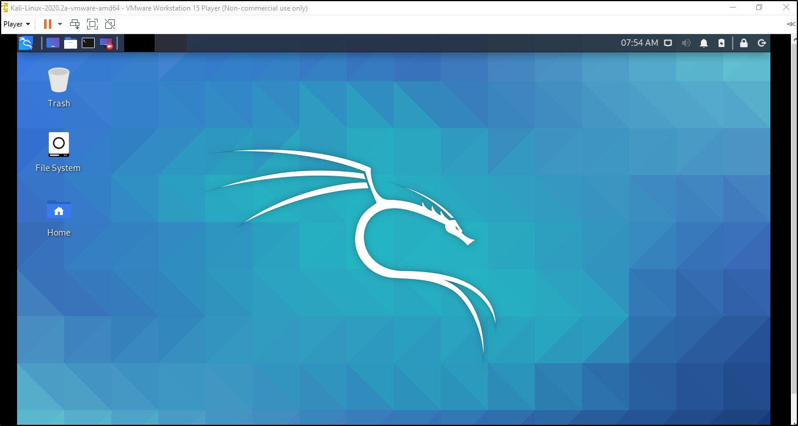

Google Kali linux download and seaerch through the results for, custom image by Offensive security, download appropriate image for VM.
Download 7zip, to unzip custom Kali download.
Boot up VMWare and click open virtual machine, go to the directory where Kali has been unzipped and click open. You can edit the settings, increase or decrease the space allocated and change the network settings too, if needed. Once done adjusting settings to your taste and pc specs,
